WELCOME TO
KANGRA VALLEY
INTRODUCTION
The Kangra Fort (Hindi: ???????), is located 20 kilometers from the town of Dharamsala on the outskirts of the town of Kangra, India. The fort was first mentioned in Alexander the Great's war records, referring to the 4th century BC.
 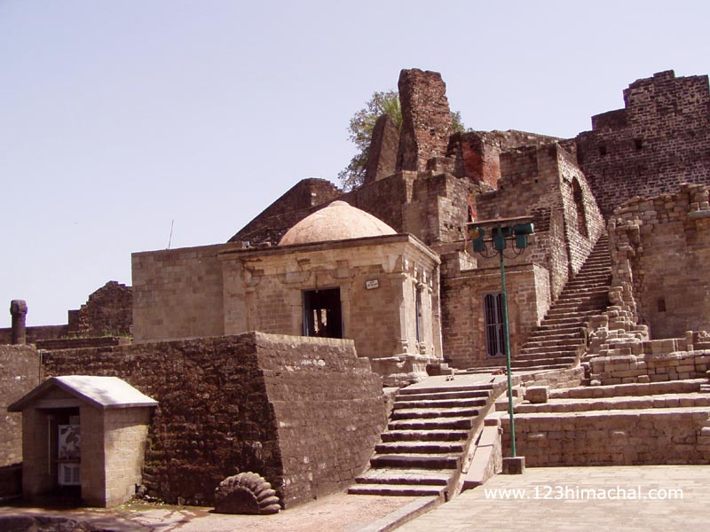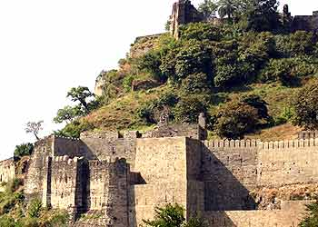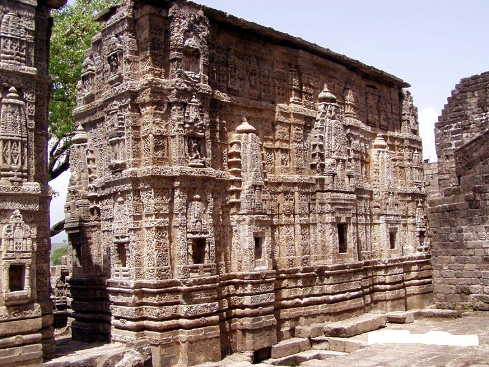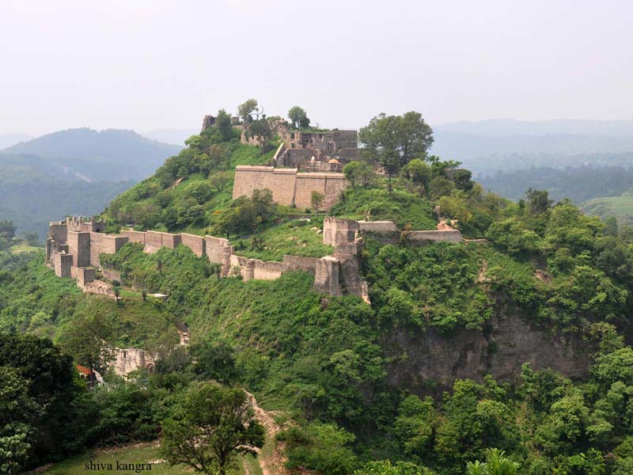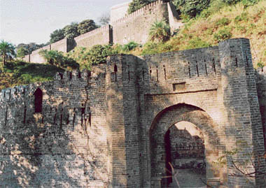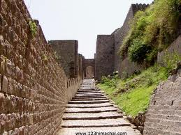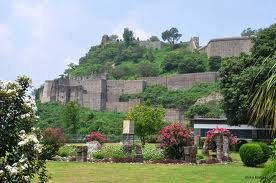
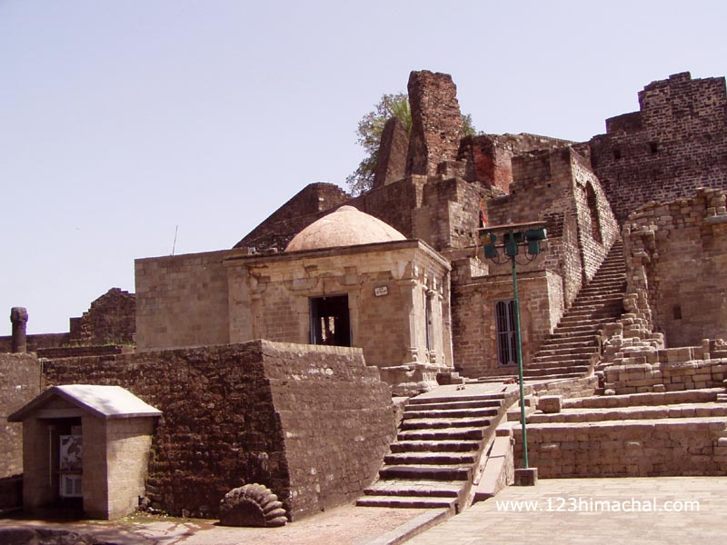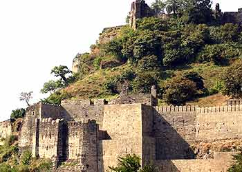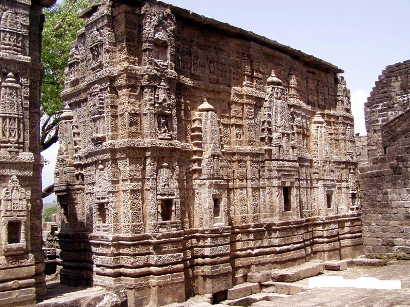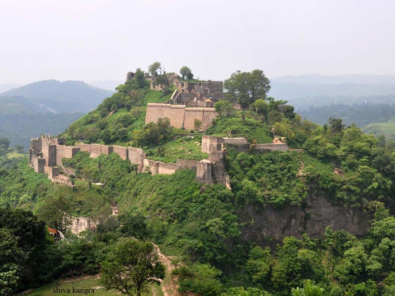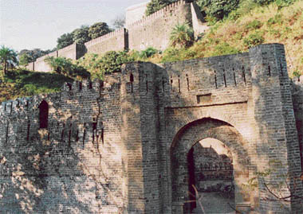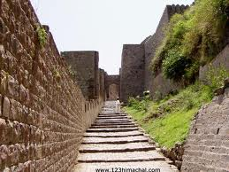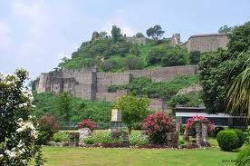
 LOCATION
The fort is right next to Kangra town. 32.1°N 76.27°E The fort stands on a steep rock in Purana Kangra (translates to Old Kangra) dominating the surrounding valley, built strategically at the "sangam" confluence (places where two rivers meet) of Banganga and Majhi rivers. It is said that Kangra belongs to one who owns the fort.
Also near to old Kangra is the famous Jayanti Mata temple on a hill top. The Temple was built by the General of the Gorkha Army, Bada Kaji Amar Singh Thapa. Also close to entrance is a small museum which exhibits the history of Kangra fort.
Adjoining the Fort is the Maharaja Sansar Chand Katoch Museum run by the Royal Family of Kangra. The Museum also provides audio guides for the fort and the museum and has a cafeteria.
HISTORY
The Kangra Fort was built by the royal Rajput family of Kangra (the Katoch dynasty), which traces its origins to the ancient Trigarta Kingdom, mentioned in the Mahabharata epic. It is the largest fort in the Himalayas and probably the oldest dated fort in India.
read more
LAYOUT
The entrance to the fort is through a small courtyard enclosed between two gates which were built during the Sikh period, as appears from an inscription over the entrance. From here a long and narrow passage leads up to the top of the fort, through the Ahani and Amiri Darwaza (gate), both attributed to Nawab Saif Ali Khan, the first Mughal Governor of Kangra. About 500 feet from the outer gate the passage turns round at a very sharp angle and passes through the Jehangiri Darwaza.
LOCATION
The fort is right next to Kangra town. 32.1°N 76.27°E The fort stands on a steep rock in Purana Kangra (translates to Old Kangra) dominating the surrounding valley, built strategically at the "sangam" confluence (places where two rivers meet) of Banganga and Majhi rivers. It is said that Kangra belongs to one who owns the fort.
Also near to old Kangra is the famous Jayanti Mata temple on a hill top. The Temple was built by the General of the Gorkha Army, Bada Kaji Amar Singh Thapa. Also close to entrance is a small museum which exhibits the history of Kangra fort.
Adjoining the Fort is the Maharaja Sansar Chand Katoch Museum run by the Royal Family of Kangra. The Museum also provides audio guides for the fort and the museum and has a cafeteria.
HISTORY
The Kangra Fort was built by the royal Rajput family of Kangra (the Katoch dynasty), which traces its origins to the ancient Trigarta Kingdom, mentioned in the Mahabharata epic. It is the largest fort in the Himalayas and probably the oldest dated fort in India.
read more
LAYOUT
The entrance to the fort is through a small courtyard enclosed between two gates which were built during the Sikh period, as appears from an inscription over the entrance. From here a long and narrow passage leads up to the top of the fort, through the Ahani and Amiri Darwaza (gate), both attributed to Nawab Saif Ali Khan, the first Mughal Governor of Kangra. About 500 feet from the outer gate the passage turns round at a very sharp angle and passes through the Jehangiri Darwaza.
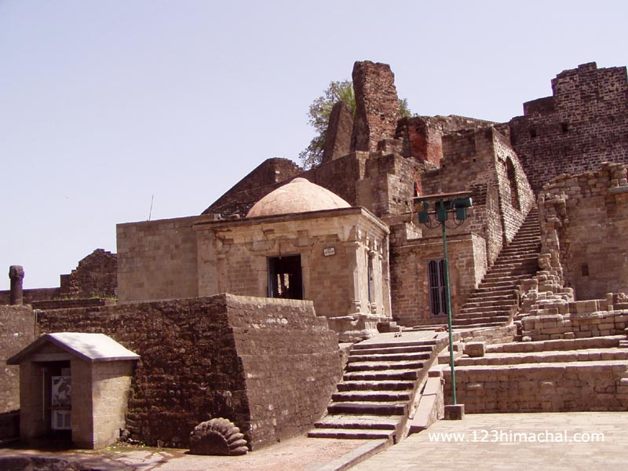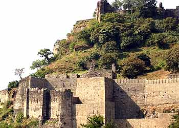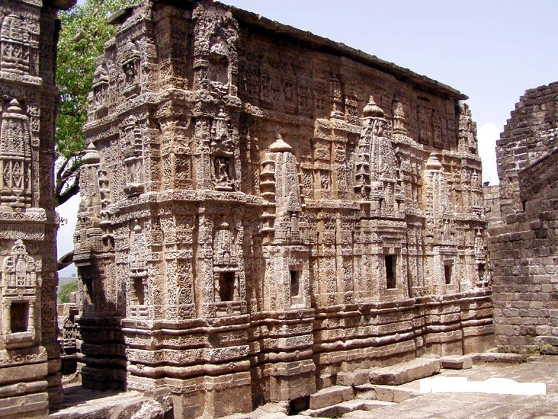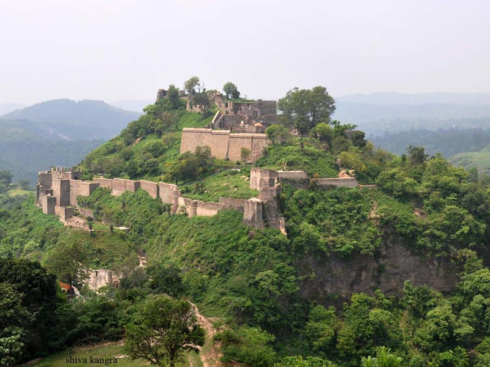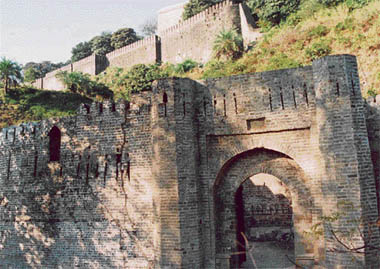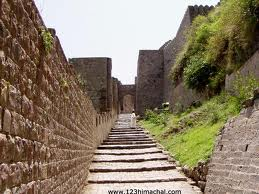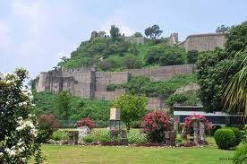